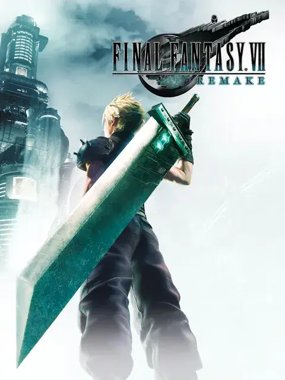
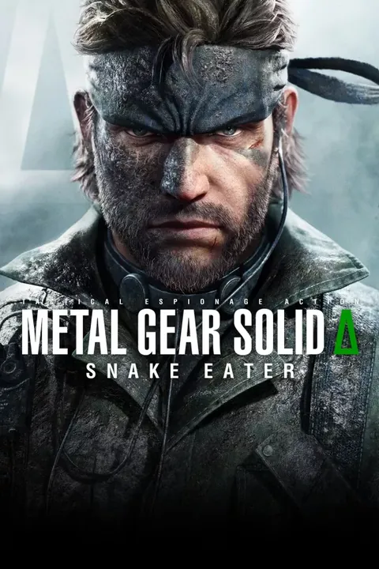
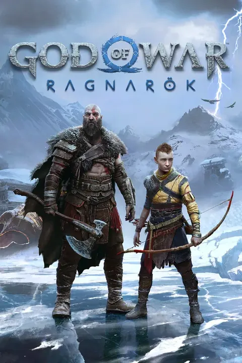
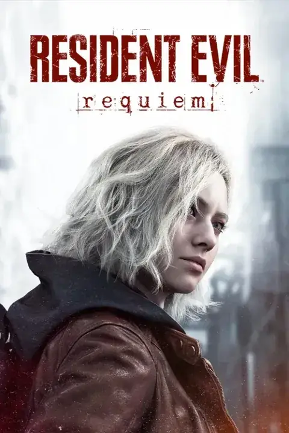
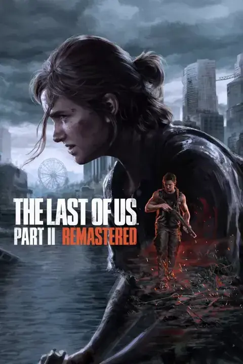
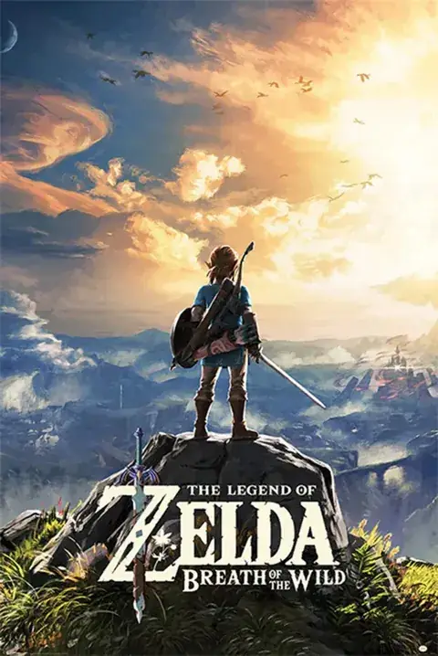
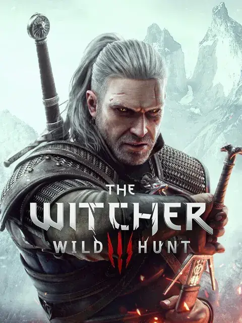
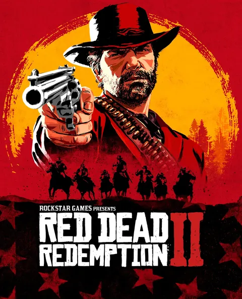

Mis juegos favoritos
Gira el carrusel y toca una tarjeta para ver más detalles.

Final Fantasy
Magia, cristales y revoluciones. Una franquicia que redefine el espectáculo visual, las bandas sonoras orquestales y las historias memorables en cada entrega.

Metal Gear Solid
La obra cumbre del espionaje táctico. Una narrativa compleja, reflexiva y antibélica que rompió la cuarta pared y transformó la industria.

God of War
De la cólera mitológica en Grecia a la madurez y la paternidad en tierras nórdicas. Un combate contundente con una dirección artística monumental.

Resident Evil
Pionero indiscutible del terror interactivo. Gestión estricta de inventario, puzles legendarios y tensión constante ante amenazas biológicas.

The Last of Us
Un viaje desgarrador sobre el apego, el duelo y los límites morales. Narrativa cinematográfica con una ambientación postapocalíptica sobrecogedora.

The Legend of Zelda
La máxima expresión de la aventura. Un sentido del descubrimiento inigualable, puzles ingeniosos y un diseño de mundo que ha dictado las reglas de la industria.

The Witcher
Un mundo de fantasía oscura y madura donde los monstruos a menudo son humanos. Decisiones con peso real que te atrapan en una red de moralidad gris.

Red Dead Redemption
El ocaso del Salvaje Oeste plasmado con un nivel de detalle obsesivo. Una obra maestra melancólica sobre la lealtad, el honor y el fin de una era.
Buscador de videojuegos
Escribe un título y te muestro los resultados con portada, plataformas y detalles. Datos de RAWG.